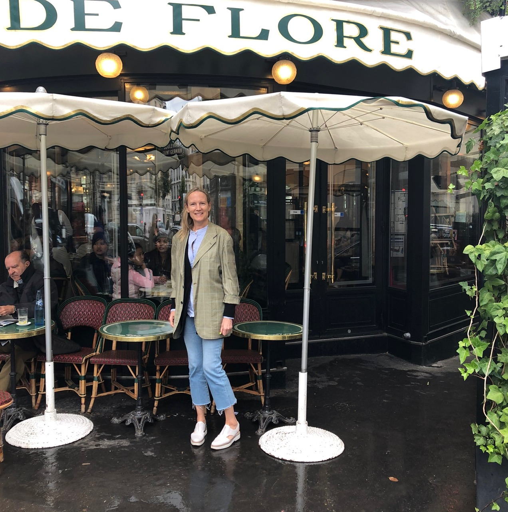
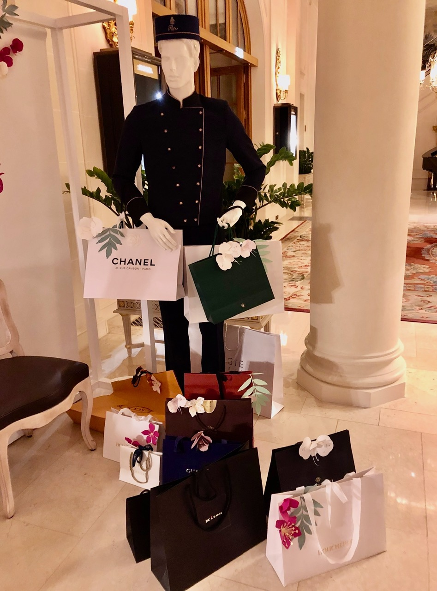
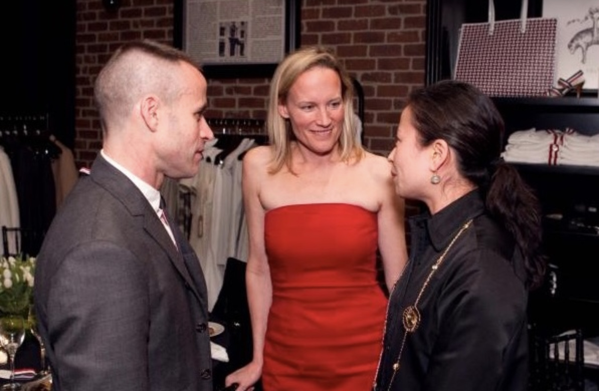
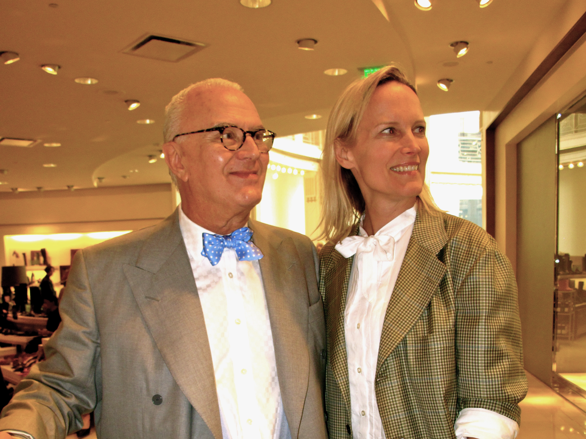
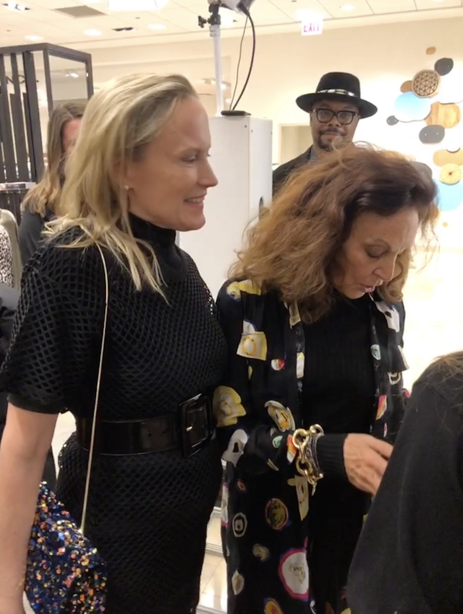
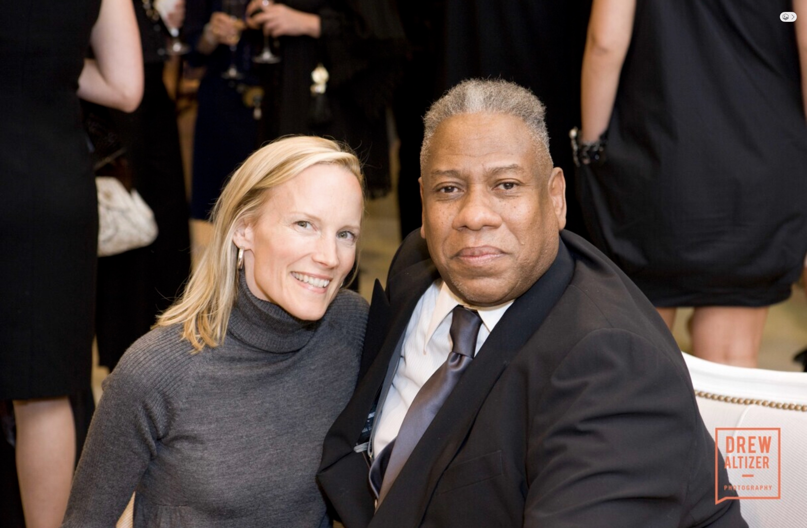

Most women I work with are highly accomplished. They run companies, serve on boards, raise families, build careers, and manage complex lives. Yet many of them stand in front of a closet full of clothes and feel they have nothing to wear.
It isn’t because they lack taste. It isn’t because they don’t care about how they look. More often, they simply haven’t had the time, interest, or inclination to develop a personal style that reflects who they are.
That’s where I come in.
As a personal stylist, I help men and women simplify one of the most visible parts of their lives: how they present themselves to the world.
After more than three decades in fashion, I’ve learned that style has very little to do with trends and surprisingly little to do with fashion itself. Style is deeply personal. It is the visual expression of who you are.
That doesn’t mean fashion isn’t fun. Quite the contrary. Whether you dip your toe in or dive headfirst, fashion can be a powerful tool for self-expression.
My iridescent velvet boots bring out my inner Mick Jagger, while my Bottega Veneta gladiator sandals make me feel like a force to be reckoned with. A Tibi blazer lends a touch of Alexander McQueen energy, and my Rachel Comey navy blazer leaves me feeling effortlessly cool.
These associations matter. The best clothes don’t just fit your body; they connect to something in your imagination. The combinations we create become what I’ve long called “gravitational pull”—that subtle but distinct energy that makes an outfit, and the person wearing it, memorable.
My philosophy about fashion and styling wasn’t formed overnight. In fact, I arrived at it in a somewhat unexpected way.
Growing up, I thought the girls who were interested in fashion were a bit silly. I moved to New York without a clear plan, only the conviction that I was going to do something meaningful. New York has a way of demanding clarity, and before long I found myself taking aptitude tests at the Johnson O’Connor Research Foundation. The results surprised me. My strongest aptitude was observation, and many of the careers recommended to me were design-related.
What better place to pursue design than New York City?
Through a fortuitous introduction to the head designer at Adrienne Vittadini, I found my way into fashion. What began as curiosity quickly became a career. I spent years immersed in the industry, learning from designers, editors, merchants, and perhaps most importantly, the endlessly inspiring parade of people on New York’s streets.
Eventually I moved west and launched my styling business. Soon after, I was voted Best of the Bay by San Francisco magazine. There I refined my approach, built relationships with leading designers, and continued making regular trips to New York for Fashion Week.
Later, I joined the founding team of The RealReal, another entrepreneurial adventure that deepened my understanding of luxury fashion and consumer behavior. Eventually, my Midwestern roots called me back. Today, Chicago is home. Alongside my styling business, I host Fashion Coffee Hour with Stanley Smith and write about fashion for Classic Chicago magazine.
Most of my clients don’t lack clothing; they lack clarity.
One client, the wife of a prominent politician, had so much on her plate that she simply wanted to delegate her wardrobe. Another, an avid art collector, loved fashion but needed an editor. In many ways, that’s what I do. I edit. I refine. I help clients identify what works, eliminate what doesn’t, and build wardrobes that support the lives they actually lead.
At its best, styling isn’t about clothing at all. It’s about helping people feel comfortable in their own skin. When someone looks in the mirror and sees a version of themselves that feels authentic, polished, and confident, everything becomes easier.
I’ve always been drawn to classical forms. In fashion, as in art, proportion, harmony, and balance matter. That’s why I gravitate toward timeless silhouettes that can be adapted and reinterpreted rather than constantly replaced. Classics provide the foundation. Once that foundation is in place, you can add personality, creativity, and a little gravitational pull.
My guiding principles are simple:
- Fit is everything.
- Buy better, buy less.
- Know your proportions.
- Have fun with trends, but don’t be ruled by them.
- Practice discernment. Not every trend deserves a place in your closet.
- Develop a little gravitational pull.
In the end, style is the visual expression of who you are. The goal isn’t to become someone else. The goal is to become more fully yourself.
Paris Fashion Week



New York Fashion Week



